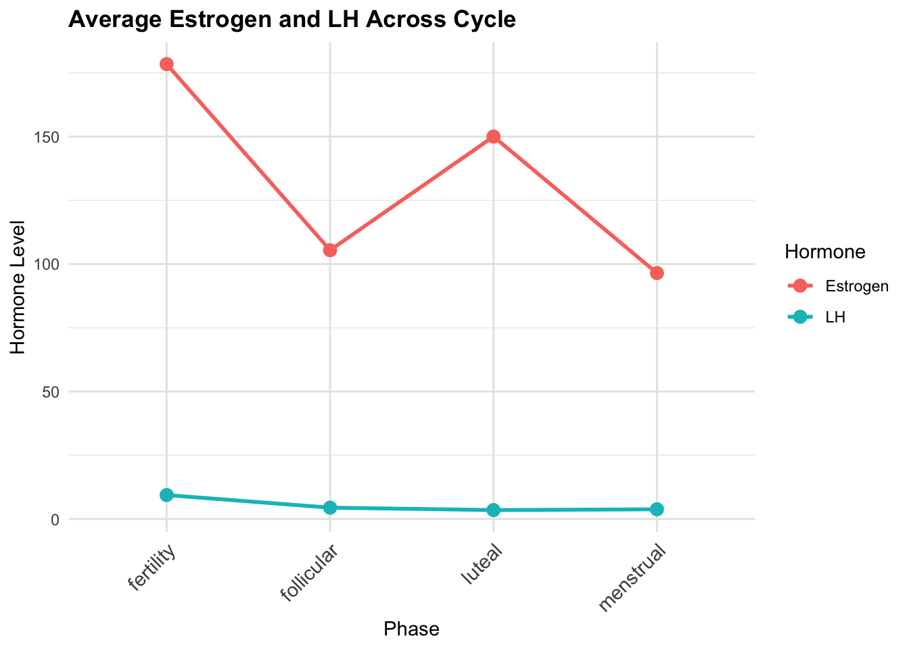
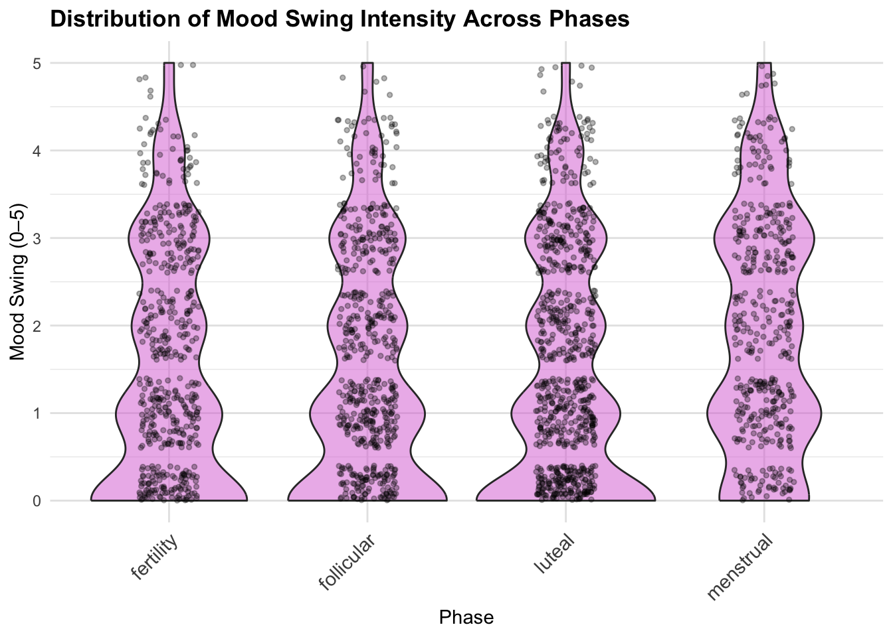
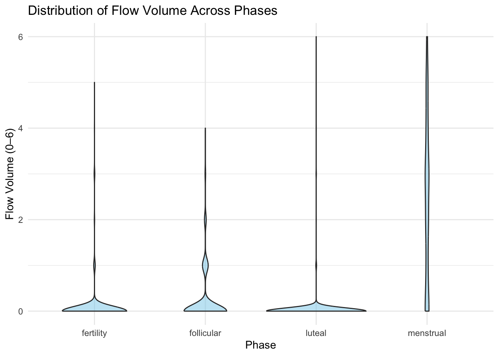

hormone_final
2025-12-03
###LH & Estrogen Across Phases Topic: Examine average estrogen and LH levels across menstrual cycle phases to see if hormonal patterns match biological expectations
## Warning: Using `size` aesthetic for lines was deprecated in ggplot2 3.4.0.
## ℹ Please use `linewidth` instead.
## This warning is displayed once every 8 hours.
## Call `lifecycle::last_lifecycle_warnings()` to see where this warning was
## generated. EDA: Estrogen levels are highest in the Fertility (ovulatory) phase, second highest in Luteal, and relatively low in Menstrual, gradually rising from Follicular to Luteal. LH is much lower than estrogen overall, peaking sharply in Fertility and remaining low in the other phases.
Discussion: These patterns are consistent with established physiology. The LH surge triggers ovulation during Fertility, while estrogen gradually rises through Follicular phase, peaks in Fertility, and remains moderate in Luteal. Menstrual phase shows low hormone levels, reflecting the hormonal reset.
###Mood Swing Distribution Across Phases Topic: Assess whether menstrual cycle phases influence mood swing intensity using violin plots.
## Warning: Removed 472 rows containing missing values or values outside the scale range
## (`geom_point()`). EDA: Violin plots show substantial inter-individual variability. Menstrual phase has the highest mood swing intensity (right-skewed distribution, peak around 1.85), while Luteal phase shows lower values with a wider base (more individuals with low mood swing).
Discussion: This distribution suggests that mood swings are most severe during menstruation, likely due to the simultaneous withdrawal of estrogen and progesterone. Luteal phase has moderate symptom expression, consistent with premenstrual hormonal shifts.
Average Mood Swing Across Phases
Topic: Summarize average mood swing intensity across phases to
visualize general trends.

EDA: Average mood swing is highest in Menstrual phase (1.85), lowest in Luteal phase (1.41), with intermediate levels in Follicular and Fertility phases.
Discussion: These averages align with known biological mechanisms: estrogen and progesterone withdrawal during menstruation contributes to elevated mood instability. This confirms the phase-dependent pattern suggested by the violin plot.
Mood Swing & Fatigue Linear Mixed Models
Topic: Test whether mood swing and fatigue differ by menstrual phase, accounting for repeated measures.
## Linear mixed model fit by REML ['lmerMod']
## Formula: moodswing_score ~ phase + (1 | id)
## Data: hormone_symptoms
## REML criterion at convergence: 8006.314
## Random effects:
## Groups Name Std.Dev.
## id (Intercept) 0.9781
## Residual 1.0035
## Number of obs: 2751, groups: id, 42
## Fixed Effects:
## (Intercept) phasefollicular phaseluteal phasemenstrual
## 1.42765 -0.02442 0.10441 0.34466## Linear mixed model fit by REML ['lmerMod']
## Formula: fatigue_score ~ phase + (1 | id)
## Data: hormone_symptoms
## REML criterion at convergence: 8847.962
## Random effects:
## Groups Name Std.Dev.
## id (Intercept) 0.9068
## Residual 1.1735
## Number of obs: 2751, groups: id, 42
## Fixed Effects:
## (Intercept) phasefollicular phaseluteal phasemenstrual
## 2.34636 0.02167 0.10965 0.30571EDA: Mood swings are lowest near ovulation, slightly higher in Luteal, and peak during Menstrual phase. Fatigue shows a similar pattern: lowest near ovulation, increasing through Luteal, highest during Menstrual phase. Random effects indicate that some individuals are chronically more fatigued or mood-sensitive than others, while residual variance captures day-to-day variability.
Discussion: Linear mixed-effects models confirm phase-dependent changes. Menstrual phase shows the greatest increases in both mood swings and fatigue, consistent with estrogen and progesterone withdrawal. Substantial inter-individual variability underscores the importance of accounting for repeated measures.
###Flow Volume Distribution Across Phases
Topic: Visualize flow volume variation across phases with violin plots to assess distribution patterns.  EDA: Luteal phase shows a right-skewed distribution, indicating most low-flow observations but a few high-flow days. Menstrual phase is narrow and tall, indicating consistently higher flow intensity.
Discussion: Flow volume is biologically highest during menstruation due to active shedding of the endometrium. Luteal phase generally has minimal flow, reflecting the quiescent secretory phase.
Average Flow Volume and Appetite Across Phases
Topic: Summarize average flow volume and appetite to observe general
trends across the menstrual cycle.
 EDA: Menstrual phase has the highest average flow (2.38), Luteal is
lowest (0.03), Fertility is 0.07, and Follicular is 0.23.
EDA: Menstrual phase has the highest average flow (2.38), Luteal is
lowest (0.03), Fertility is 0.07, and Follicular is 0.23.
Discussion: Average flow reflects physiological endometrial shedding. Menstruation peaks in intensity, Luteal remains minimal, matching known biological patterns.

EDA: Appetite is highest in Fertility (2.96), lowest in Follicular (2.85), Luteal 2.95, Menstrual 2.90.
Discussion: Appetite appears modestly correlated with estrogen levels, peaking during Fertility when estrogen is highest. Other phases show smaller differences, suggesting hormonal influence is phase-specific but subtle.
###Linear Mixed Model: Appetite vs Estrogen Topic: Explore the relationship between estrogen levels and appetite scores, accounting for repeated measures.
## Linear mixed model fit by REML ['lmerMod']
## Formula: appetite_score ~ estrogen + (1 | id)
## Data: hormone_symptoms
##
## REML criterion at convergence: 6107.7
##
## Scaled residuals:
## Min 1Q Median 3Q Max
## -5.0464 -0.5701 0.0334 0.5181 3.9022
##
## Random effects:
## Groups Name Variance Std.Dev.
## id (Intercept) 0.1746 0.4178
## Residual 0.5223 0.7227
## Number of obs: 2725, groups: id, 42
##
## Fixed effects:
## Estimate Std. Error t value
## (Intercept) 2.8935583 0.0694275 41.677
## estrogen 0.0001294 0.0001489 0.869
##
## Correlation of Fixed Effects:
## (Intr)
## estrogen -0.291EDA: Random intercept variance (0.1746) indicates participant-specific baseline appetite differences. The fixed effect of estrogen is small (0.00013 per unit) and not significant (t = 0.869).
Discussion: After accounting for repeated measures, there is no clear evidence that higher estrogen directly predicts higher appetite. Baseline individual differences explain more variance than hormonal fluctuations alone. Including phase or other hormones (LH, PDG) may improve model sensitivity.
limitation:
Several limitations should be considered when interpreting these findings. First, the dataset relies on self-reported symptom scores, which may be subject to recall bias or subjective interpretation. Second, while repeated measures are accounted for using linear mixed models, the sample size for some phases may be limited, reducing statistical power to detect subtle effects. Finally, other biological and lifestyle factors—such as stress, sleep, diet, and physical activity—were not controlled for, which could influence mood, appetite, and fatigue. Therefore, the results should be interpreted as suggestive of phase-related trends rather than definitive causal effects.